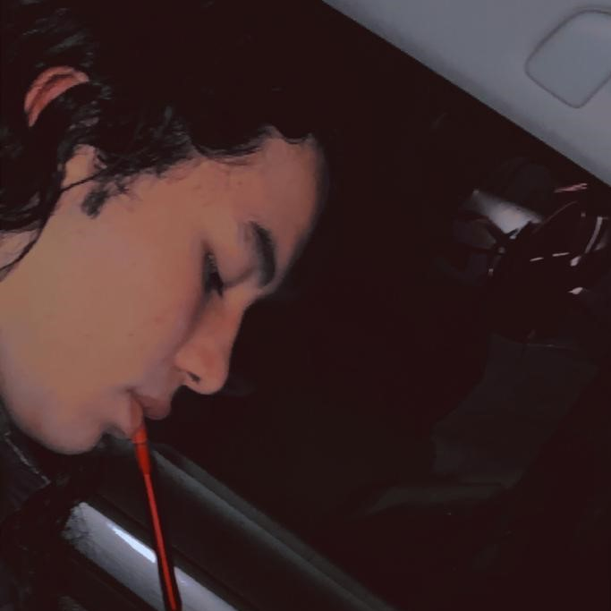

Ian Christopher Giraldo Chavarria
¿Como me considero?, considero que soy un estudiante diferente a los demas, una persona servicial, comprometida a esforzarse y a lograr ser el mejor en cada reto que me proponga en el dia a dia
Jorge Andres Ruiz Florez
Soy un estudiante responsable, respetuoso, caballero, un programador nivel aprendiz medio, nacionalidad Peruana y Colombiana, actual
estudiante de la institucion Francisco Antonio Zea, aprendio a crear su primera pagina a los 12 años de edad y
desde entonces sigo mi camino como programador.